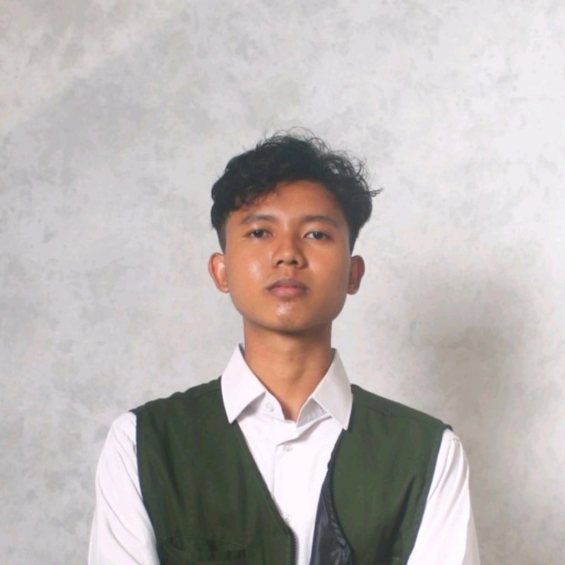

Hi,
I'm Irfan!
An Information Systems student with a strong passion for Data Science and Artificial Intelligence, building intelligent solutions from raw data that genuinely improve people's lives.
Projects
PusatKost UNNES — Integrated Housing Platform
Mengembangkan platform pencarian dan kelola hunian kos mahasiswa di sekitar UNNES dari nol menggunakan Laravel, React (Inertia.js), dan Nginx SSL. Mengintegrasikan asisten cerdas virtual NESA dengan kemampuan AI tool-calling ke database untuk menghasilkan rekomendasi kos dalam latensi < 2 detik.
PecknRun
Merancang arsitektur backend, skema database, dan controller Laravel 13, serta membangun microservice AI internal berbasis Python FastAPI dan RAG (Retrieval-Augmented Generation). Menghubungkan asisten operasional ke gateway LLM untuk mengecek inventaris, transaksi penjualan, dan rujukan SOP merchant secara real-time.
Revisi Mudah — Audio-to-Academic Planning System
Membangun sistem perencanaan revisi akademik dari rekaman audio bimbingan menggunakan Faster-Whisper, Gemini multimodal, Typer CLI, dan server Model Context Protocol (MCP). Menerapkan verifikasi bukti kutipan verbatim bertimestamp dan batas izin privasi ketat (Zero Silent Cloud Uploads) untuk menghasilkan rencana revisi terstruktur.
MathSense-ID
Merancang dan mengimplementasikan pipeline penalaran neuro-simbolik untuk menyelesaikan soal cerita matematika bahasa Indonesia menggunakan Rule-Based NER, Graf Pengetahuan (NetworkX), dan SymPy. Berhasil mengeliminasi halusinasi aritmatika pada variasi nilai rupiah dan desimal dengan 95/95 rangkaian pengujian unit Pytest lolos.
Deteksi Review Bombing & Anomali Multi-View KAI Access
Menganalisis 15.000+ data ulasan Google Play Store untuk mendeteksi serangan review bombing terkoordinasi menggunakan pemodelan proses stokastik Goh-Barabási (burstiness B), leksikon teknis transportasi KA, dan graf modularitas Louvain. Membangun dashboard visualisasi Streamlit interaktif untuk memetakan ulasan ke dalam 4 kuadran perilaku.
Warasin — Because Your Mind Matters
Melakukan data cleaning, feature engineering, dan analisis multivariat pada kuesioner Sleep Health & Lifestyle survey menggunakan Pandas, Plotly, dan Streamlit. Membangun visualisasi dashboard interaktif untuk memetakan korelasi pola tidur terhadap klasifikasi tingkat stres pengguna.
ReviewBPS & BPS Data Automation
Membangun aplikasi evaluasi kinerja pegawai berbasis Node.js, Express, dan Turso SQLite, serta menulis skrip automasi pemrosesan data survei statistik menggunakan Python Pandas. Berhasil mendigitalisasi rekapitulasi penilaian pegawai dan mempercepat validasi data statistik di BPS Kabupaten Purworejo.
Experience
IPDS Intern — BPS Kabupaten Purworejo
Memproses, memvalidasi, dan mentransformasi data survei dan sensus. Mengembangkan automasi berbasis Python untuk efisiensi workflow pemrosesan data.
Data Scientist Cohort — Coding Camp powered by DBS Foundation
Program intensif 6 bulan di bidang Data Science, mencakup data preprocessing, exploratory analysis, model development, dan visualisasi.

About Me
I'm an Information Systems student at Universitas Negeri Semarang (UNNES) with a strong passion for both Data Science and Artificial Intelligence. I love working with data, finding patterns that matter, and turning those insights into intelligent solutions that can genuinely improve people's lives.
My work sits at the intersection of AI and Data Science. I enjoy the full journey — from exploring raw data, uncovering patterns, and building machine learning models to deploying them into real, usable applications. I work comfortably with Python, Streamlit, and machine learning frameworks.
Beyond the technical side, I care about making AI understandable and accessible. The best model means nothing if the people it is built for cannot trust or use it. Currently sharpening my skills through real projects and collaborative work.
Education
Universitas Negeri Semarang (UNNES)
Information System — 2024 - Present